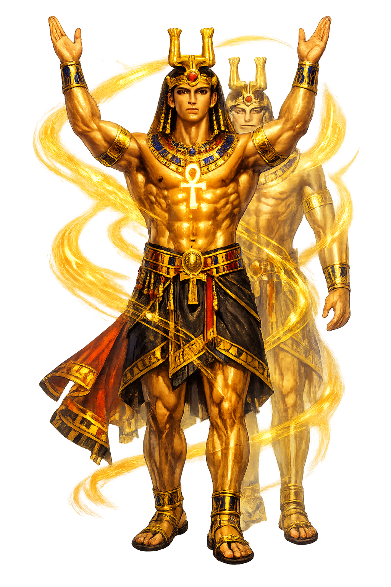

The Authentic Orthography
Vital Essence, Life Force · The vital essence, life force, or double of a person. Created at birth and surviving death.

Unicode restoration and ASCII comparison
𓂓𓏤
The name in its original Egyptian form. Kꜣ (𓂓𓏤) is attested in the source tradition — “The vital essence, life force, or double of a person. Created at birth and surviving death.”. Its Egyptological ain and alef letters carry the full phonetic and orthographic weight of the source tradition.
ka
Reduced to plain ka, the name loses everything that made it specific: Egyptological ain and alef letters. What remains is an ASCII string that machines can parse but that no longer speaks with its original voice.
Kꜣ
The Unicode restoration recovers what ASCII flattened. Kꜣ restores Egyptological ain and alef letters, returning the name to its original written dignity. The domain encodes to Punycode, but the browser displays the truth.
Kꜣ.com → xn--k-yw3e.com
The non-ASCII characters in Kꜣ are encoded while the ASCII remains visible. To the DNS, it is Punycode. To humanity, it is Kꜣ.
How Kꜣ travels from ancient script to the modern URL
Egyptian kꜣ “vital essence, life-force"; the double created at birth and sustained by offerings.
Vital Essence, Life Force
The Unicode restoration Kꜣ uses Egyptological characters registrable in .com; hieroglyphs are outside the .com IDN table.
How Kꜣ was spoken
Life-Force · Sustenance · Divine Presence
The Egyptian kꜣ is the life-force that makes a person alive, the vital double created at birth and sustained by offerings. Where the ba is the mobile personality, the ka remains tethered to the body and the tomb, consuming the spiritual essence of bread, beer, and meat.
Khnum shapes the infant and its ka on the potter's wheel; Heka animates it.
Tombs are 'houses of the ka'; offerings feed the life-force after death.
A ka-statue provides a form for the ka if the body perishes.
Kings possess multiple kas; gods extend their presence through ka-doubles.
Stories of Kꜣ
The Egyptian ka is the vital double, the life-force that makes a person alive and that continues after death. Born with the body, shaped by the creator god, and sustained by offerings, the ka links the living, the dead, and the divine.
In Egyptian theology, the god Khnum shapes the infant body and its ka on the potter's wheel, while Heka, the power of magic, animates it. The ka is not a separate soul in the modern sense but the living energy that accompanies the body. To have a ka is to be alive; to lose it is to die.
After death the ka leaves the body but remains tethered to it, returning to the corpse or to a statue made in the deceased's likeness. Tombs were therefore called 'houses of the ka', and statues were provided so the ka had a form to inhabit. Without a preserved body or substitute image, the ka could not receive offerings and would starve.
Kings possess multiple kas, divine doubles that extend their presence into cult and cosmos. The god Amun is called 'Amun, his ka', and the ka of Ptah is invoked in Memphis. In this way the ka is not only personal but theological: it is the principle by which a god's power can be present in many places at once.
Every tomb inscription asks for offerings 'for the ka of' the deceased. The formula 'May the king give an offering to Ptah-Sokar-Osiris' ensures that bread, beer, oxen, and fowl are magically provided. Relatives placed real food in the tomb chapel, but the ka was believed to consume the spiritual essence while the material food remained for the living.
The lore you have read is the surface — the living myth. Beneath it lies the scholarship: etymology, reconstructed pronunciation, Unicode character breakdown, and the cultural legacy of Kꜣ.
Enter Extended Lore